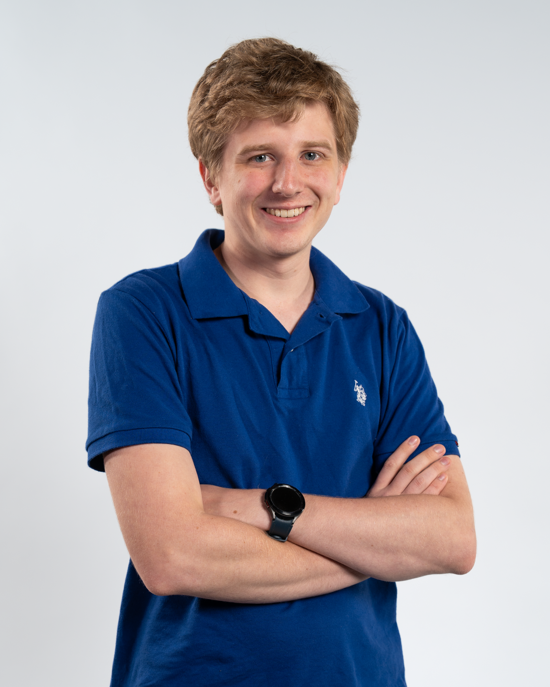
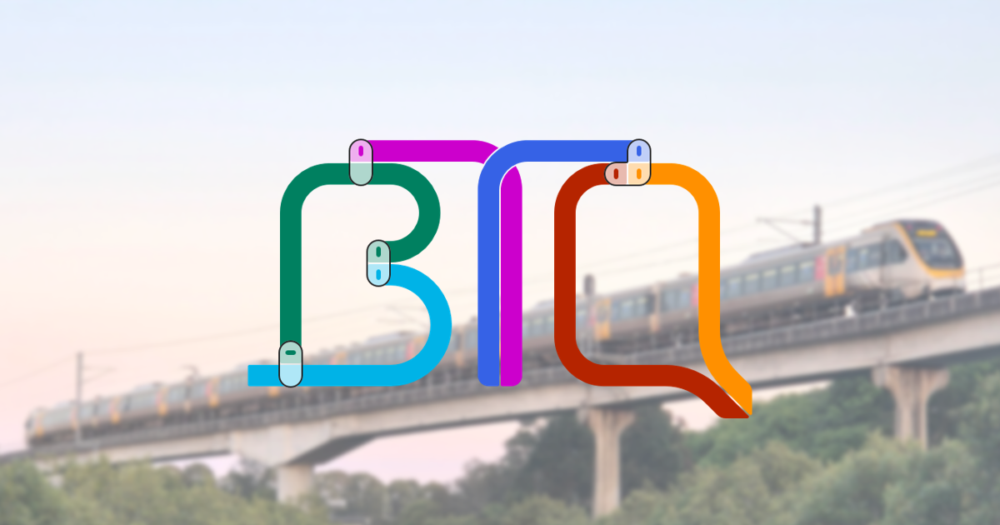

About Me
I’m a Computer Science graduate from the University of Queensland and currently working as a Graduate Developer at TechnologyOne. I’m part of the Core Platform Team, where I help maintain and evolve the CiA platform—a powerful, enterprise-level solution used by universities, councils, and other essential industries.
I thrive in environments where scalable software meets real-world impact, and I'm passionate about designing reliable, future-focused systems.
Professional Interests
At TechnologyOne, my work includes crafting high-impact features and maintaining the robustness of critical infrastructure that supports operations across sectors. I'm especially interested in system design, code optimization, and the role of innovation in shaping enterprise solutions.
Community Advocacy
Outside the office, I'm actively involved with Better Transport Queensland, a non-profit dedicated to improving mobility across the state. We champion equitable access to public and active transport, reduce congestion, and drive community-wide sustainability through bold, forward-thinking policies and engagement.
Let’s Connect
I also coach debating, blending my analytical mindset with communication training to help students sharpen their reasoning and public speaking. I'm always keen to discuss software architecture, transit systems, and clever ways tech can improve daily life.